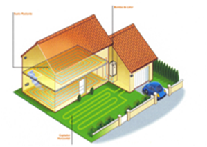
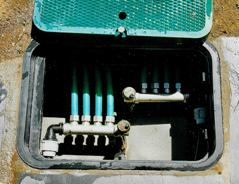
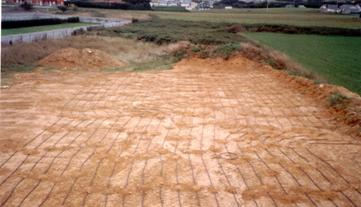

El captador, se compone de una red de tuberías formando un serpentín, por las que circula un líquido a base de agua y anticongelante (glicol).
Enterradas en una o dos capas a 0,60m. ó 1,20m. de profundidad, este sistema es más económico que las sondas verticales y es una opción interesante cuando hay bastante terreno en superficie.
También se pueden colocar en zanjas, en este caso las tuberías se dispondrán en dos niveles uno a 1,20 m. separados de 60 cm. Y una segunda a 0,60 m del nivel del suelo.
Captador realizado en San Miguel de Reinante - Lugo